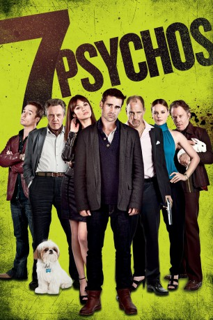

#1632 7 Psychos
Alternativ: Seven Psychopaths
 
 IMDB-Wertung: 7.2 / 10
IMDB-Wertung: 7.2 / 10  Metascore: 66
Metascore: 66 
Der Drehbuchautor Marty hat beim Schreiben Ladehemmung und kommt mit seinem Drehbuch einfach nicht weiter. Dabei hat er mit '7 Psychopaths' bereits einen guten Titel, aber ihm fehlen die Figuren. Deshalb gibt sein bester Freund Billy eine Anzeige auf, in der er Psychopathen sucht – und zieht Marty in die Auseinandersetzung mit dem Gangsterboss Charlie hinein, dessen geliebten Hund Bonnie er entführt hat. Daher stecken sie schon bald mit Billys undurchsichtigem Chef Hans inmitten eines aberwitzigen Abenteuers.
Jahr: 2012
Dauer: 110 Minuten
FSK: 16
Land: England Studio: DCM Film DistributionTonspuren: DTS - ,
Untertitel: Deutsch,
Auflösung: 720p (1280x576) Größe: 5160 MB
Genre: Komödie, Krimi
Regisseur: Martin McDonagh
Drehbuch: Martin McDonagh
Soundtrack: Carter Burwell
Darsteller:
 Michael Pitt als Larry
Michael Pitt als Larry Michael Stuhlbarg als Tommy
Michael Stuhlbarg als Tommy Sam Rockwell als Billy
Sam Rockwell als Billy Colin Farrell als Marty
Colin Farrell als Marty Abbie Cornish als Kaya
Abbie Cornish als Kaya Christopher Walken als Hans
Christopher Walken als Hans- Linda Bright Clay als Myra
 Harry Dean Stanton als Man in Hat
Harry Dean Stanton als Man in Hat James Landry Hébert als Killer
James Landry Hébert als Killer Christopher Gehrman als Cellmate
Christopher Gehrman als Cellmate- Christian Barillas als Catholic Priest
 Joseph Lyle Taylor als Al
Joseph Lyle Taylor als Al Kevin Corrigan als Dennis
Kevin Corrigan als Dennis Woody Harrelson als Charlie
Woody Harrelson als Charlie Gabourey Sidibe als Sharice
Gabourey Sidibe als Sharice Zeljko Ivanek als Paulo
Zeljko Ivanek als Paulo- Long Nguyen als Vietnamese Priest
- Christine Marzano als The Hooker
 Helena Mattsson als Blonde Lady
Helena Mattsson als Blonde Lady Tom Waits als Zachariah
Tom Waits als Zachariah Brendan Sexton III als Young Zachariah
Brendan Sexton III als Young Zachariah Amanda Warren als Maggie
Amanda Warren als Maggie- John Bishop als The Butcher
- Richard Wharton als The Hippy
 Olga Kurylenko als Angela
Olga Kurylenko als Angela- Johnny Bolton als Barman
 Ronnie Gene Blevins als First Cop
Ronnie Gene Blevins als First Cop- Tai Chan Ngo als Fellow Monk
- Bonny als Bonny
- Lionel D. Carson als Corporal Nobel , uncredited
- Samantha Cutaran als Receptionist , uncredited
- Kiran Deol als Doctor , uncredited
 Sandy Martin als Tommy's Mother , uncredited
Sandy Martin als Tommy's Mother , uncredited- Lourdes Nadres als Crime Scene Tech , uncredited
- Jamie Noel als Girl , uncredited
- Ante Novakovic als Patron at Bar , uncredited
- Patrick O'Connor als Judge , uncredited
- Andrew Schlessinger als Dog Trainer Neighbor , uncredited
- Scott Anthony Simmons als Mafia Funeral Mourner , uncredited
- Ricky Titus-Lam als Vietnamese Rider , uncredited
 Todd Weeks als Irish Priest , uncredited
Todd Weeks als Irish Priest , uncredited- Frank Alvarez als Hispanic Guy
- George the Basset-Hound als Missing Dog , uncredited
- Breezy the Beagle als Warehouse dog , uncredited
- Chester the Chihuahua als Warehouse dog , uncredited
- Finnegan the Dog als Warehouse dog , uncredited
- Paxton the Dog als Warehouse dog , uncredited
- Ryan Driscoll als Diner Patron , uncredited
- Kenneth Flanagan als ER Doctor , uncredited
- Sam B. Lorn als Monk , uncredited
Datei: X:\2012(A-F)\7 Psychos (2012, FSK16, 1280x576).mkv seit 28.07.2015
Festplatte: HD 2012(A-M)
 Es gibt insgesamt 102 Filme in der Gruppe '2012(A-F)'
Es gibt insgesamt 102 Filme in der Gruppe '2012(A-F)'